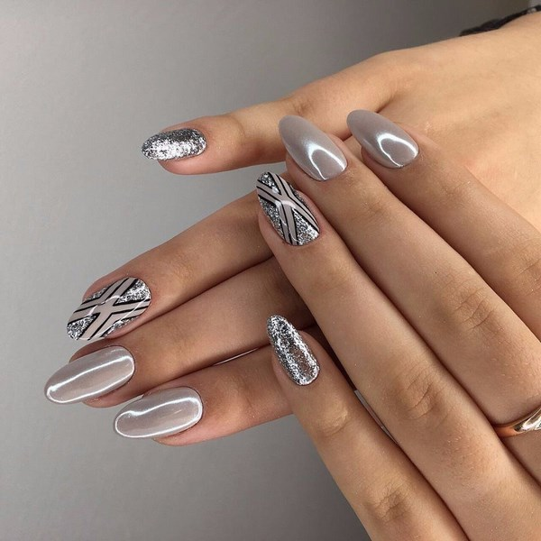
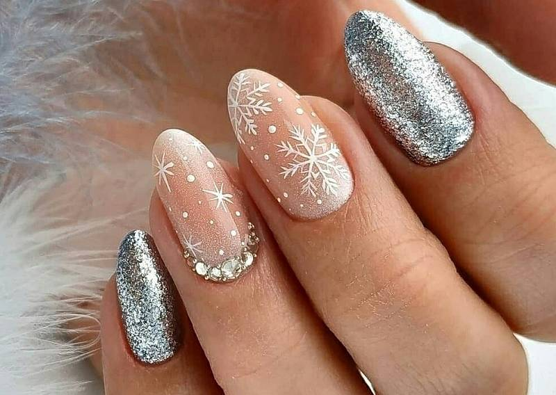

 
Главным хозяином Нового Года будет – Белый Металлический Бык. Чтобы задобрить, а не разгневать новогоднего покровителя, необходимо следовать восточным гороскопам – знать актуальные цвета нового года 2021. Цвета Нового года 2021: колористика от Быка!
Астрологи утверждают, что если в любимой цветовой гамме восточного знака встретить новый год, то удача будет сопутствовать все 12 месяцев. Соблюдать колорит желательно в вещах, а также постоянных местах обитания человека. Цвета Нового года 2021: колористика от Быка!